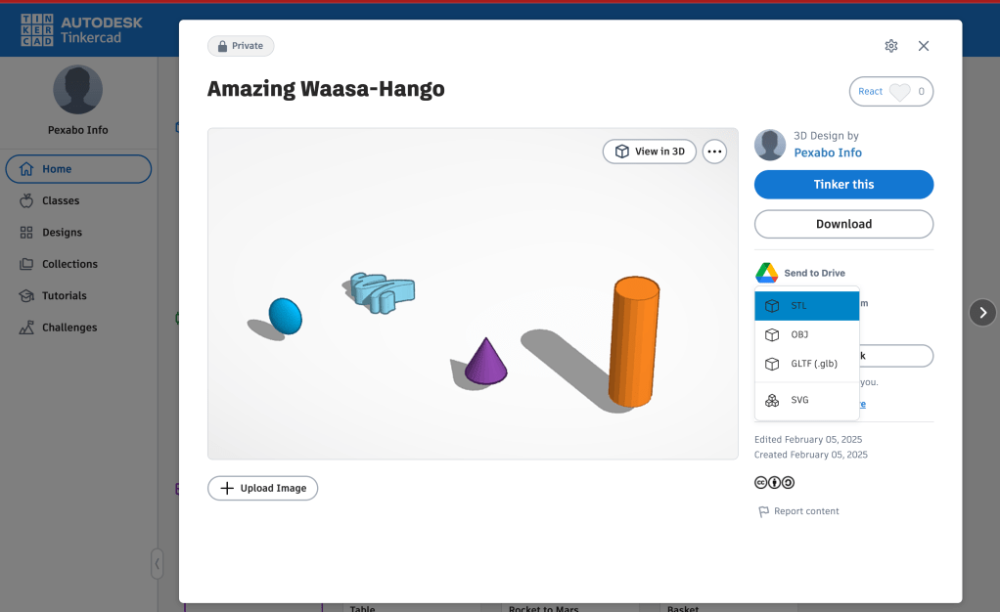
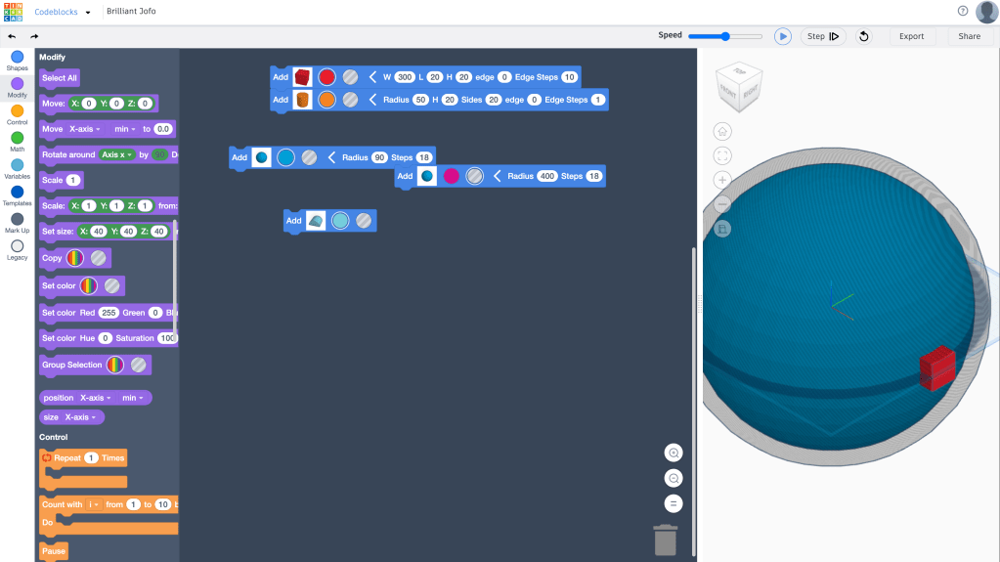
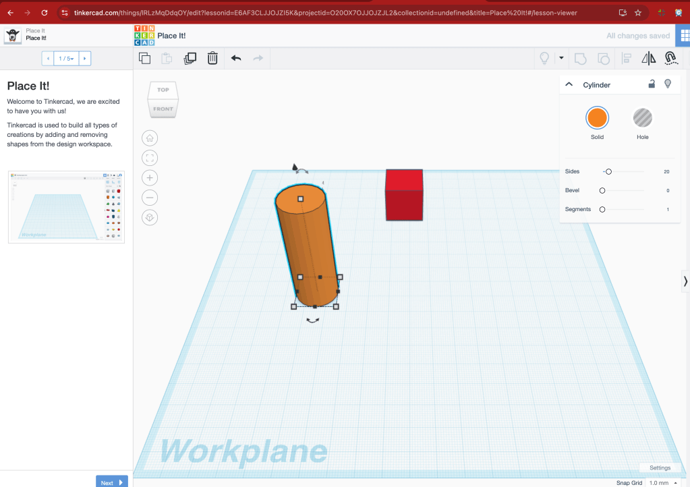
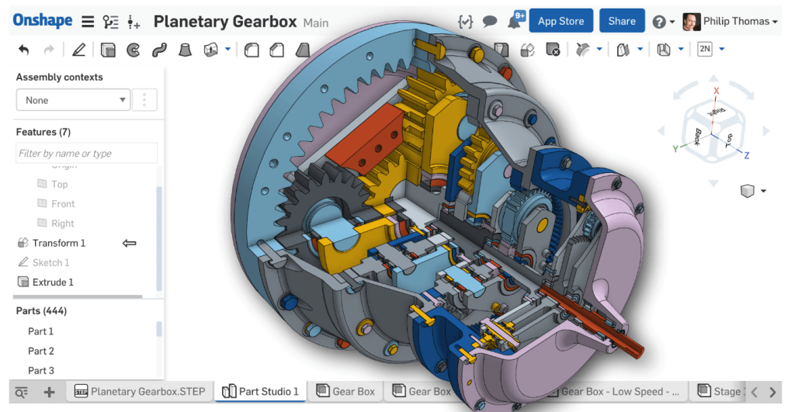

🚀 Creating a Memory Palace in 3D: Tinkercad vs. Onshape 🏰
Have you ever wanted to create a Memory Palace in 3D but felt overwhelmed by the tools available? Today, we’ll explore how Tinkercad makes it easier to design a Memory Palace compared to Onshape, and how you can use a POV (Point of View) camera to navigate your creation. Let’s dive in! 🛠️
🧠 What is a Memory Palace?
A Memory Palace is a mnemonic device used to improve memory retention. It involves visualizing a familiar space (like a palace or a house) and placing "mental objects" in specific locations to represent information. Translating this into 3D can make the process even more immersive and effective! 🏛️
🛠️ Tinkercad vs. Onshape: Which is Better for a Memory Palace?
Tinkercad: The Beginner-Friendly Choice 🎨
-
Ease of Use: Tinkercad’s intuitive drag-and-drop interface makes it perfect for beginners. You can quickly create custom shapes and structures without needing advanced CAD skills.
-
Custom Shapes: Unlike Onshape, which relies on predefined 3D shapes, Tinkercad allows you to build unique, personalized objects for your Memory Palace.
-
Quick Prototyping: You can experiment and iterate rapidly, which is ideal for visualizing complex spaces like a Memory Palace.

Example of a Memory Palace layout in Tinkercad.
Onshape: The Professional Alternative 🏗️
-
Predefined Shapes: Onshape offers a library of predefined 3D shapes, which can be limiting if you want to create something as unique as a Memory Palace.
-
Advanced Features: While Onshape is powerful for professional CAD work, its complexity might slow you down if you’re just starting out.
-
Collaboration: Onshape shines in team environments, but for solo projects like a Memory Palace, Tinkercad might be more efficient.
🎥 How to Enter a POV Camera in Tinkercad
One of the coolest features of Tinkercad is the ability to navigate your 3D space from a first-person perspective. Here’s how to do it:
-
Open Your Design: Load your Memory Palace project in Tinkercad.
-
Switch to POV Mode: Click on the "View" menu and select "First Person View".
-
Navigate: Use your keyboard’s arrow keys or WASD to move around, and your mouse to look around. It’s like walking through your Memory Palace in real life! 🚶♂️
Saves on TinkerCad

CodeBlocks Stepby Step

TinkerCad

OnShape

Exploring a Memory Palace in Tinkercad’s POV mode.
💡 Why Use Tinkercad for a Memory Palace?
-
Customization: You can design every detail of your Memory Palace to match your mental imagery.
-
Accessibility: Tinkercad is free and browser-based, so you can start designing right away.
-
Immersive Experience: The POV camera lets you "walk through" your Memory Palace, making it easier to memorize and recall information.
🚀 Ready to Build Your Memory Palace?
Whether you’re a student, professional, or just someone who loves learning, creating a 3D Memory Palace in Tinkercad can be a game-changer. Give it a try and let me know how it goes! 🌟
🔗 Connect with Me:
-
💼 LinkedIn: Rifat Erdem Sahin
-
🐦 Twitter: @rifaterdemsahin
-
🎥 YouTube: Rifat Erdem Sahin
-
💻 GitHub: rifaterdemsahin
References: ! 🚀✨
If you're looking for online tools to create 3D maps and place items within them, here are some options to consider:
1. 3D Mapper: his browser-based application allows you to create interactive 3D maps effortlessly. You can customize and edit your map, then embed it on your website, download it for 3D printing, or share it online. It's ideal for various users, including travel bloggers, educators, and tourism agencies.citeturn0search1
2. Maps 3D: ith Maps 3D, you can select an area and generate a customized 3D map. The platform offers models made from open data sources with commercial-friendly licenses, allowing for versatile use, including reselling. Depending on the imagery source, attribution might be required when reusing the 3D model.citeturn0search0
3. Equator: quator is an online 3D map-making software designed for civil engineers, architects, and designers. It provides access to thousands of built-in datasets, enabling you to use elevation data to bring your 3D map to life or design a custom map using built-in tools.citeturn0search2
4. Figuro: iguro is a free online 3D modeling application suitable for creating 3D models for games, prototypes, architecture, art, and more. It offers powerful editing tools and is user-friendly for both beginners and experienced 3D modelers.citeturn0search3
5. SketchUp: ketchUp is a 3D modeling software that offers a range of tools for creating detailed 3D designs. It's widely used in architecture, interior design, and engineering.
6. Tinkercad: inkercad is a free online 3D design and 3D printing app that's user-friendly and suitable for beginners. It's a great tool for creating simple 3D models and designs.
7. Icograms Designer: cograms Designer is an online tool for creating 3D maps, diagrams, and illustrations. It offers a variety of icons and elements that you can place within your 3D maps to create detailed visualizations.
Each of these platforms offers unique features tailored to different needs. Depending on your specific requirements—such as the complexity of the map, the level of detail needed, or the intended use—you might find one more suitable than the others.
If you're looking for a Tinkercad alternative that includes a POV (Persistence of Vision) feature, you might want to explore Autodesk Fusion 360. Fusion 360 is a more advanced CAD tool that offers a wide range of features, including simulation and rendering capabilities that can be used to create POV effects. While it doesn't have a dedicated POV feature, you can simulate POV by creating animations or using the rendering tools to visualize how your design would look in motion.
Other alternatives to consider:
-
Onshape:
-
A cloud-based CAD tool that is great for collaborative design. While it doesn't have a specific POV feature, you can create animations to simulate motion.
-
Blender:
-
Blender is a powerful open-source 3D modeling and animation tool. It’s not specifically a CAD tool, but it’s excellent for creating POV effects and animations. You can import CAD models and use Blender’s animation tools to create POV simulations.
-
FreeCAD:
-
An open-source parametric 3D CAD tool. While it doesn’t have a built-in POV feature, you can use its animation workbench to create motion simulations.
-
OpenSCAD:
-
A script-based CAD tool that is great for creating precise models. You can use external tools or scripts to simulate POV effects.
-
SolidWorks:
-
A professional-grade CAD tool that includes motion simulation and animation features. You can create POV-like effects using its advanced rendering and animation tools.
If you’re specifically looking for a tool with a built-in POV feature for educational or hobbyist purposes, you might need to combine a CAD tool with an animation or rendering software like Blender to achieve the desired effect.
Imported from rifaterdemsahin.com · 2025